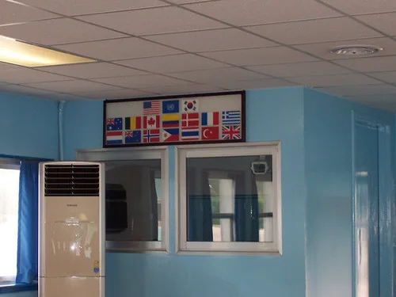
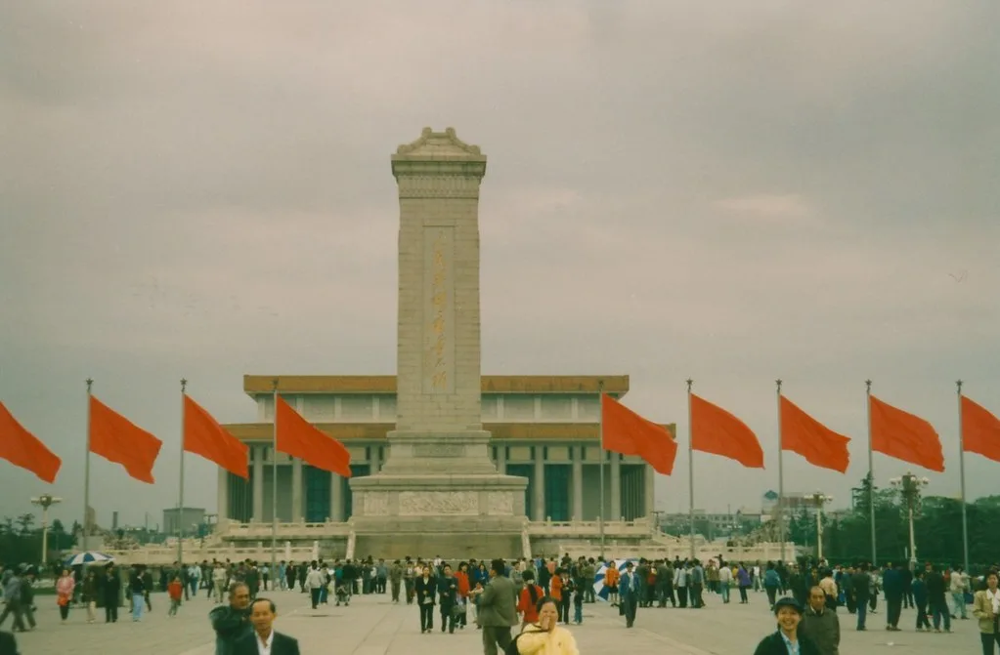

김정은, 1년 만에 전격 방중…단둥서 왕후닝과 '항미원조' 기념 일정
북한 김정은 국무위원장이 24일 중국 랴오닝성 단둥을 전격 방문했다. 북중 접경의 신압록강대교를 통해 중국 쪽으로 넘어간 김 위원장은 당일 일정을 마친 뒤 그날로 북한에 복귀한 것으로 전해졌다. 북한 최고지도자의 방중은 2025년 9월 이후 1년여 만이며, 집권 이후 여섯 번째 중국 방문이다.
이번 방문은 중국이 한국전쟁 참전을 기념하는 '항미원조'(抗美援朝) 76주년인 10월 25일을 하루 앞두고 이뤄졌다. 국내 복수 매체에 따르면 김 위원장은 단둥에서 중국 권력서열 4위인 왕후닝 전국인민정치협상회의(정협) 주석과 회동했다. 그는 자신의 방문이 중국의 6·25전쟁 참전에 대한 '감사와 경의'를 표하기 위한 것이라고 밝힌 것으로 전해졌다.

김 위원장은 단둥 현지에서 항미원조기념탑에 헌화하고 관련 기념관을 참관했다. 이어 단둥 소재 자동차 공장을 시찰하는 일정도 소화한 것으로 알려졌다. 시진핑 중국 국가주석이 직접 나서는 정상회담 형식이 아니라, 지방 방문과 실무 성격의 만남으로 일정이 꾸려진 점이 눈에 띈다.
북한 최고지도자의 외국 방문은 통상 사전 예고 없이 전격적으로 이뤄지는 경우가 많다. 이번 방중 역시 출발 당일에야 외신과 국내 정보당국을 통해 동향이 알려졌다. 신압록강대교는 북중이 공동으로 건설해 개통을 앞둔 교량으로, 이번 방문이 교량 관련 행보와 맞물려 있다는 관측도 나온다.

이번 방중은 최근 북한 내부 동향을 둘러싼 각종 추측이 제기된 가운데 이뤄져 더욱 주목받았다. 김 위원장이 공개 행보를 이어가면서 관련 추측은 자연스럽게 가라앉는 분위기다. 동시에 지난 9월 비무장지대(DMZ) 지뢰 폭발 사고 이후 남북 간 긴장이 이어지는 상황에서, 북한이 중국과의 '혈맹' 관계를 재확인하며 외교적 지지 기반을 다지려는 행보로도 해석된다.
외교가에서는 이번 방중을 북·미 정상회담 재개 가능성 등과 연결 지어 해석하는 시각도 나온다. 일부 전문가는 북중 간 우호 행보 강화가 북한의 대외 협상력을 높이려는 포석일 수 있다고 분석하지만, 구체적인 정책 변화로 이어질지는 아직 불확실하다는 신중론도 함께 제기된다.
정부는 이번 방중의 세부 내용과 의도를 면밀히 살피고 있다고 밝혔다. 북중 관계 복원 움직임이 한반도 정세에 미칠 영향, 그리고 향후 북한의 추가 행보 여부가 외교 당국의 주요 관심사로 떠오르고 있다.